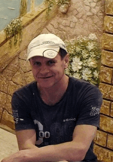
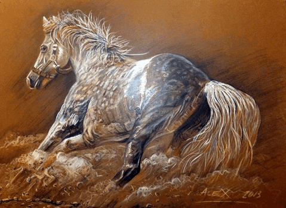
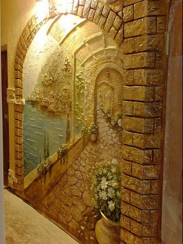

Alexandr Dralo
Постмодернізм як явище був виділений в кінці 1980-х років. За своєю природою явище постмодерну — це певний відчай у пошуках сенсу, будь якої істини у чомусь. Попередні художньо-культурні напрями, як-от авангардизм та модерн, були підґрунтям для формування постмодерну як чогось, що заперечує попередні тенденції. Якщо авангард прямував до чогось нового і прагнув завжди відкривати щось, чого не було раніше, модерн певним чином «академізував», тобто намагався побачити естетику в усіх проявах людського буття. Постмодернізм виступає чимось розчарованим у попередніх прагненнях «створити щось», або «прийти до чогось». Епоха постмодерну — це певний стан сумніву в усьому, що йому передувало.
У філософії постмодернізму відзначається зближення її не з наукою, а з мистецтвом. Суть (якщо можна говорити про якусь суть, адже постмодернізм відмовляється і від цього поняття) постмодерністських процедур зводиться до принципової відмови від серйозності щодо всіх традиційних цінностей культури. Епоха постмодернізму відображає іронію щодо руху філософії у певному напрямку та досягнення нею якихось цілей і зводить усе до певного нігілізму та роздробленості світосприйняття безпосередньо кожним окремим суб’єктом.
Постмодерністи, завдяки гіркому історичному досвідові, переконалися у марноті спроб поліпшити світ, втратили ідеологічні ілюзії, вважаючи, що людина позбавлена змоги не лише змінити світ, а й осягнути, систематизувати його, що подія завжди випереджає теорію. Прогрес визнається ними лише ілюзією, з'являється відчуття вичерпності історії, естетики, мистецтва. Реальним вважається варіювання та співіснування усіх (і найдавніших, і новітніх) форм буття. Принципи повторюваності та сумісності перетворюються на стиль художнього мислення з притаманними йому рисами еклектики, тяжінням до стилізації, цитування, переінакшення, ремінісценції, алюзії. Митець має справу не з «чистим» матеріалом, а культурно освоєним, адже існування мистецтва у попередніх класичних формах неможливе в постіндустріальному суспільстві з його необмеженим потенціалом серійного відтворення та тиражування.
Величезний внесок у створення певного постмодерністського стилю мислення та бачення естетики приносить французький філософ, теоретик літератури – Жак Дерріда. Його концепція має основну тезу – « Все є текст», відповідно «Немає нічого окрім тексту». Світ реальності постає як сукупність знаків, символів. В яких немає автора. Текст, який створив певний автор, втрачає свій ноуменальний сенс, який він в нього вкладає, так як цей самий текст переосмислюється іншим суб’єктом, який вбачає в ньому свої сенси. Естетика тут є певним безпосереднім переживанням, не обов’язково об’єкту мистецтва. Естетика зливається з усім і проявляється в усьому. Головним поняттям, яким було б можливо описати процес злиття естетики та філософії є поняття деконструкції.
Мішель Фуко, в своїй роботі «Історія божевілля в класичну епоху», останню частину присвячує порівнянню таких феноменів як творчість та божевілля. Говорячи про творчість, спочатку Фуко називає божевілля «вирішальним моментом» будь-якої творчості. Але в подальшому він робить ці два поняття контрарними між собою, так як вони суперечать одне з одним. «В классическом опыте творчество и безумие были связаны на ином, более глубоком уровне: они парадоксальным образом ограничивали друг друга. Ибо существовала некая область, в которой безумие опровергало творчество, уничтожало его своей иронией, превращало его воображаемые ландшафты в патологический мир фантазмов; язык бреда не мог быть творческим. И наоборот: если бред считался творчеством, он тем самым отделялся от жалкой истины собственного безумия».